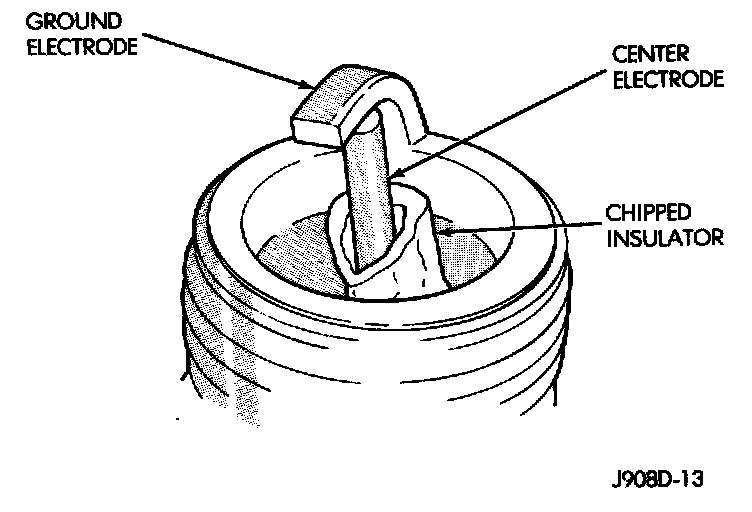

Broken, Cracked or Chipped Insulator
ELECTRODE INSULATORChipped Electrode Insulator:

Electrode Insulator
A chipped electrode insulator usually results from bending the center electrode while adjusting the spark plug electrode gap. Under certain conditions, severe detonation also can separate the insulator from the center electrode. A sudden rise in tip temperature or severe operating conditions are also possible causes. Spark plugs with chipped electrode insulators must be replaced.